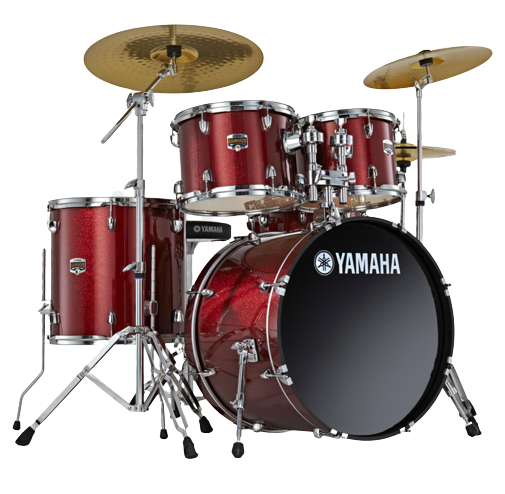

The Drum
Instrument grouping many percussions, the battery includes both symbals and barrels arranged so
that only one person can play it. It is used in all styles of music and serves as a rhythmic
basis. Only a few elements change depending on the style played, for example you can add barrels
and double pedals. The instrument appeared in the 20th century in North America, at the same
time as the birth of Jazz and all its derivatives such as the blues.
for more information about the history ->
wikipédia